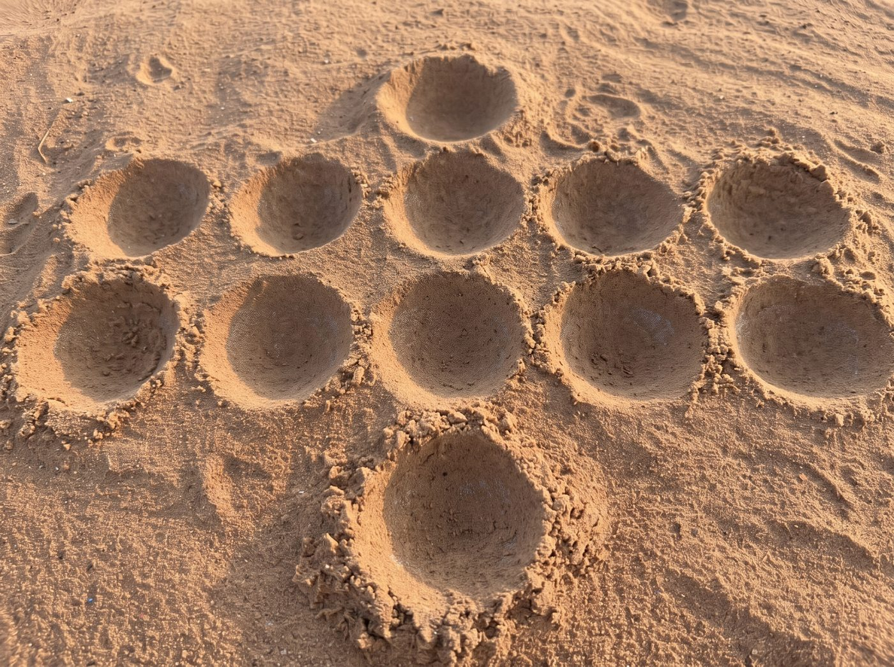

Ngai
Jeu de semis traditionnel tupuri

Les règles
- Chaque joueur a une rangée de cinq trous : celle du bas pour le Sud, celle du haut pour le Nord. Au départ, chaque trou contient 5 pions.
- À son tour, on choisit un de ses trous qui contient au moins 2 pions. Ses pions sont semés un par un dans les trous suivants, dans le sens inverse des aiguilles d'une montre, y compris chez l'adversaire.
- Si le dernier trou semé contient alors 2 ou 4 pions, on les prend (gain simple). On prend aussi les trous suivants de la même rangée tant qu'ils contiennent 2 ou 4 pions (gain cumulatif).
- Un joueur qui ne peut pas jouer passe son tour. La séance finit quand plus personne ne peut jouer : chacun prend les pions de sa rangée, et le plus gros grenier gagne.
Certaines règles sont encore à confirmer avec des joueurs de Ngai. Les règles en détail et les questions ouvertes.